ZZU
-
入行
在 First Job（yonyou）和 Second Job（时光漫步）
成长于工作中 -
中等
收获与学习
我跃 我写 -
提升
SCM
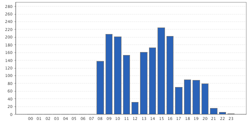 SCM Per Hour Commits -
Idonote 0.0.1
它诞生了 Idonote...
崭新的开始 O(∩_∩)O -
Message
Execute PMD 4.3 done:65177ms
Clean snapshot 5457
Total time: 8:21.159s
Final Memory: 9M/305M
Finished: SUCCESS
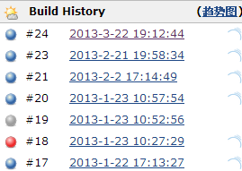 -
GIS
May help you, Gis Doc
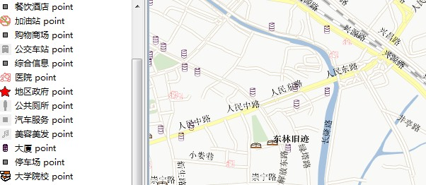 My Hard Work -
I'm back
App Engine, Domain Manager
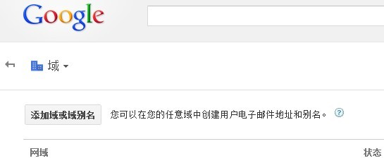 GEA Domain Console -
Mac Air coming
入手教育版2012 Mac Air ,开始一周的ios 学习

IOS Android BB WP8 Symbian -
Happy New Year
.....
Mark -
好的编程语言，改变你的编程思维
SublimeT2 . Git(sourceTree) . Python . Weka . Esxi
Hybrid . Responsive web design . Flat Design . JS(Moduled)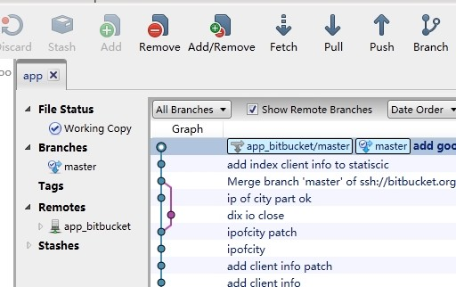 Tools & Design -
Hadoop2_64
hadoop2.2 yarn compile 64
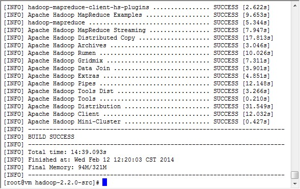 hadoop2 yarn -
Life
out of BJ,begin in MZ
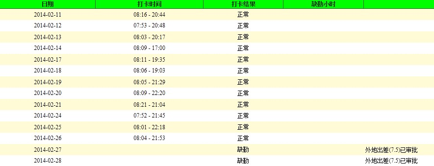 MeiZhou FXGL Start -
My Job Snippet
Current Thing (:> Prepare for leaving Yonyou.
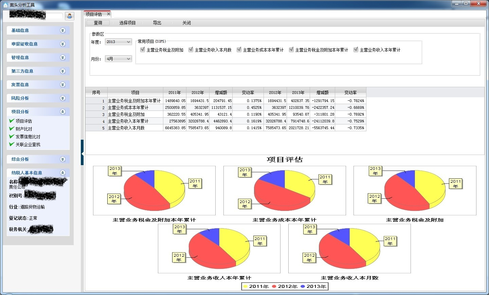 do what you can do -
New Job @UAP
Eclipse 法则:
一切皆是贡献:懒加载,有样学样,安全平台,良好防御.
Dubbo 接口拆细，正交分解;AIP vs SPI一个是使用者,一个是扩展者.
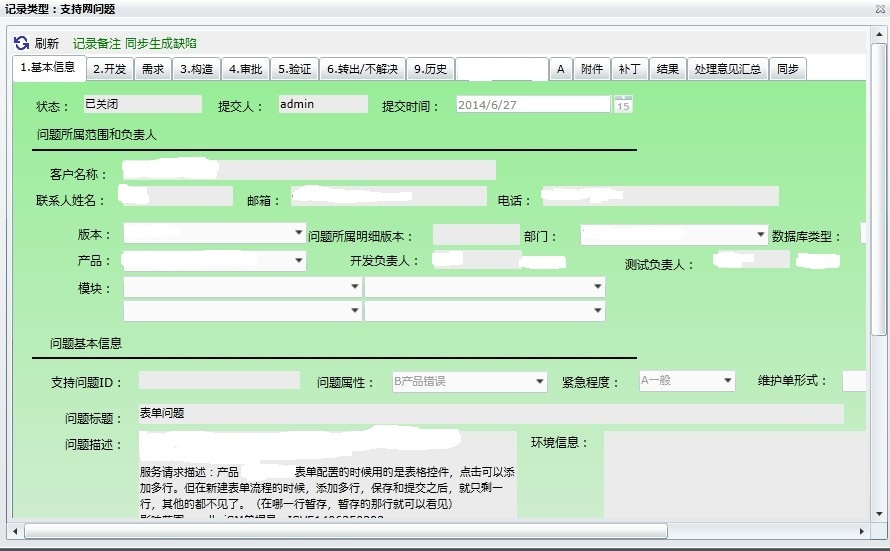 -
UAP
UAP-开发条目-侧边栏特征.
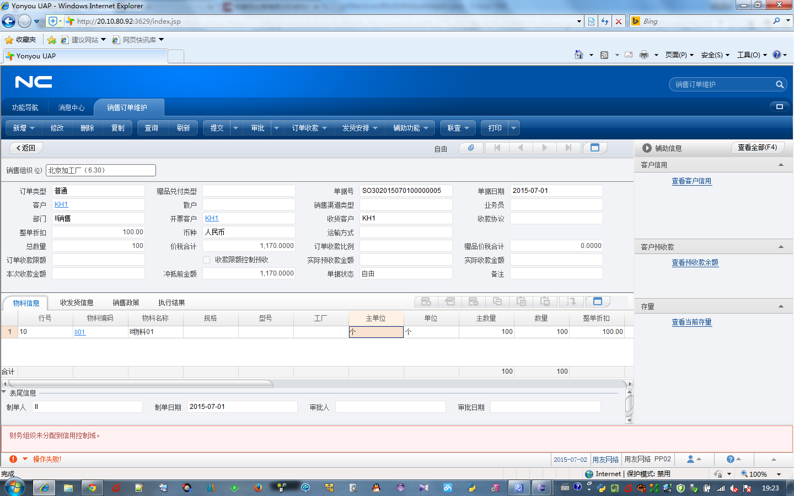 -
D7000
生活不只是工作.
-
MP
独立自主.
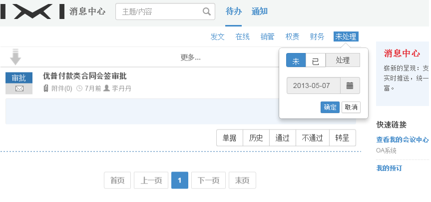 -
ipay&join
离开了.yonyou.变则通
-
宣武门~动物园
运动可以有,产出
Ops:OpenVPN,Puppet,Graylog,Pinpoint,Walle,OCR
Pro:bl.18join(保理垫付),eb-data(电商数据),mcm(银联小微)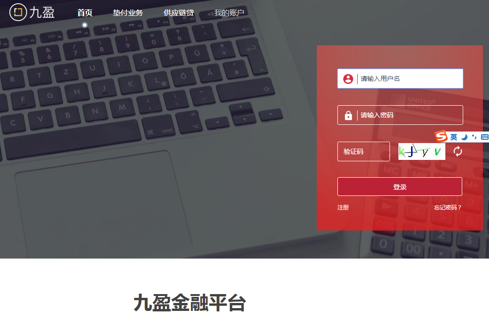 -
集齐三证
暂住证，工作居住证，居住证
-
ReactJS
- 基于Antd UI 设计语言。
- 基于[dva]动态加载 Model 和路由，按需加载。
- 使用[umi]本地调试和构建，其中Mock功能实现脱离后端独立开发。
- 浅度响应式设计。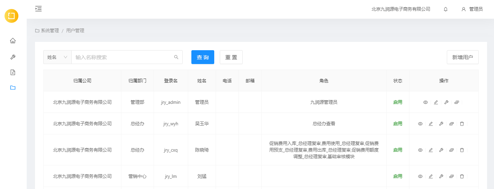 -
GW(Kong)
API-GW
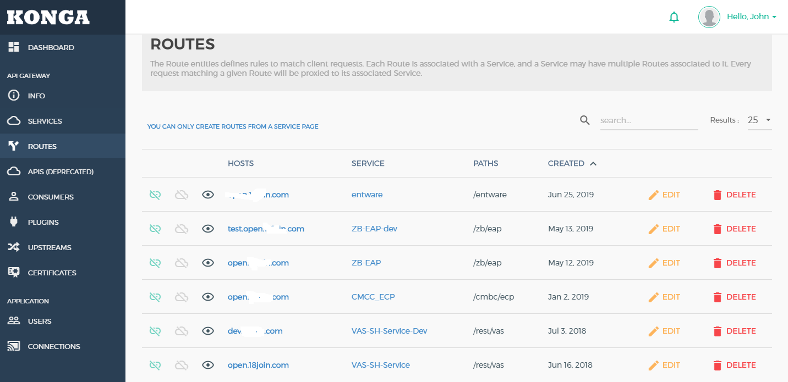 -
ML(TensorFlow)
TF using more than two thousand sample learn JD VerifyCode model ...
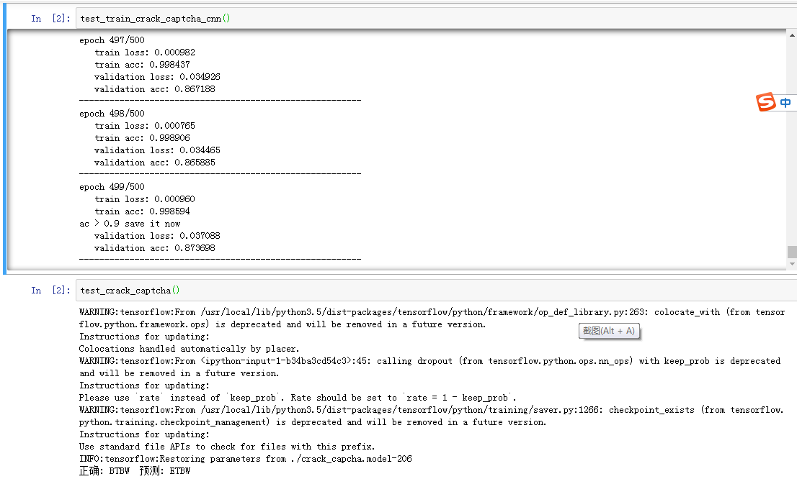